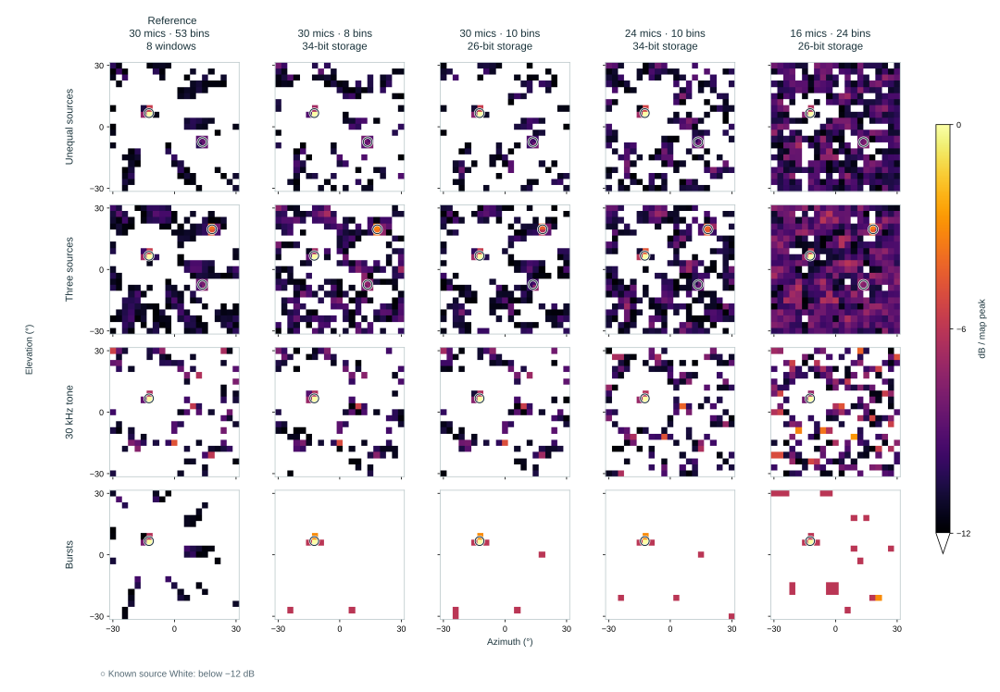
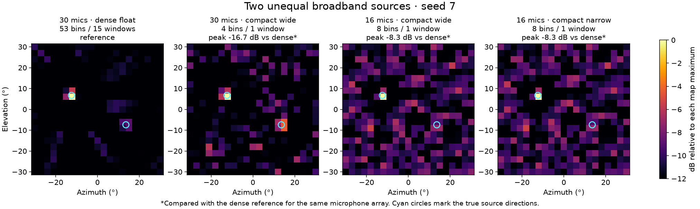
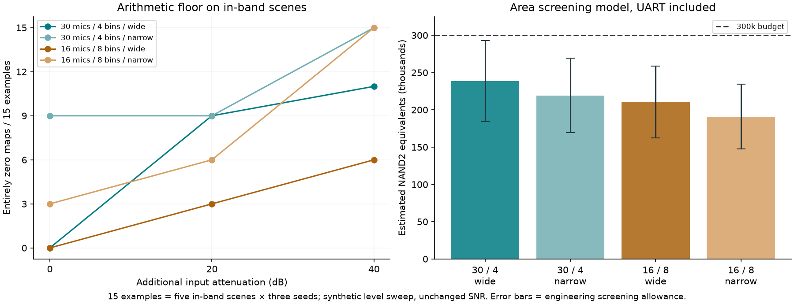

Spec (ESD)
Current direction: partial-discharge acoustic imaging for electrical inspection. Set: use case, drone platform and chip constraints. Everything marked TBD is still open; candidate values and supporting details are kept below.
Use casePartial-discharge inspection · set.
Commercial references
- CRYSOUND CRY2626G: PD and pressurized-gas leak inspection.
- FLIR Si2-PD: PD detection, classification and severity assessment.
- Fluke ii915: PDQ mode for PD classification; also leak and mechanical inspection.
These products establish an airborne-acoustic PD inspection use case; their detection claims are product-specific.
Locate airborne acoustic emissions from electrical partial discharge and overlay hotspots on a live camera feed.
Elevated transmission-line inspection
Reference scale: 400 kV · about 50 m tall · about 350 m between towers. National Grid, §4.4.3
Proposed approach: hover beside elevated insulators and fittings, targeting 10 m source-to-camera distance; 30 m stretch. Aim: reduce inspection climbs and reach equipment difficult to inspect from the ground.


Terminology: this tab uses the team’s “ESD” shorthand; the intended application is partial discharge (PD), not electrostatic-discharge testing.
Acoustic localization alone does not establish discharge type, apparent charge or severity.
Mounting platformDrone · set.
Commercial references
- CRYSOUND CRY2626G: Drone payload for DJI M300 RTK / M350 RTK; 2-axis gimbal and Skyport V2.
- FLIR Si2-PD: Handheld; drone integration not specified.
- Fluke ii915: Handheld with tripod mounting; drone integration not specified.
CRY2626G is the direct mounting reference; the handheld models provide acoustic-performance comparisons.
Drone-mounted inspection of elevated electrical assets. CRYSOUND CRY2626G provides a commercial mounting reference.
Frequency bandTBD (20–40 kHz)
Commercial references
- CRYSOUND CRY2626G: 2–48 kHz.
- FLIR Si2-PD: 2–130 kHz.
- Fluke ii915: 2–100 kHz.
Our candidate 20–40 kHz band is within the published frequency ranges of these references.
Justification: Kang et al. found 88.5% of valid corona detections within 25–45 kHz and recommended 30–40 kHz for short-distance measurements; they also cite prior findings concentrated at 30–50 kHz. Our candidate 20–40 kHz band includes the recommended 30–40 kHz region.
Front end: select microphones with verified response over 20–40 kHz and a PCM sample rate above 80 ksample/s, allowing an anti-aliasing transition band. The earlier 48 ksample/s PCM baseline cannot cover this band. The Microphones page now lists the Infineon IM66D130M; validation over 20–40 kHz is still pending.
Field of viewTBD (60°)
Commercial references
- CRYSOUND CRY2626G: 62° camera FOV; separate acoustic coverage not specified.
- FLIR Si2-PD: 75° diagonal camera FOV; separate acoustic coverage not specified.
- Fluke ii915: 63° ±5° under acoustic sensing and imaging, also listed for the visible camera.
Camera FOV is a framing reference; acoustic coverage and angular resolution require separate validation.
Working candidate: 60° sector; acoustic coverage and camera alignment need validation. CRYSOUND CRY2626G lists a 62° camera FOV; that is not a measured acoustic-resolution specification.
Angular resolutionTBD
Commercial references
- CRYSOUND CRY2626G: Not published for acoustic angular resolution; the listed 1° is gimbal accuracy.
- FLIR Si2-PD: 1°–0.125° directional resolution (manufacturer’s terminology).
- Fluke ii915: Not published in the sources checked.
FLIR’s datasheet does not define a two-source separation test or its conditions; retain our resolution target as TBD.
Status: TBD. Minimum angular separation at which two sound sources can be distinguished. The target and measurement conditions remain to be defined.
Target rangeTBD
Commercial references
- CRYSOUND CRY2626G: 0.5–35 m test distance.
- FLIR Si2-PD: 0.3–200 m operating distance.
- Fluke ii915: 0.5–120 m operating distance in the May 2024 product specifications; ambient conditions apply.
Published ranges depend on source strength, noise and propagation; they do not establish our array’s detection distance.
CRYSOUND CRY2626G lists a 0.5–35 m test distance; this is a commercial reference, not a demonstrated range for our array.
Performance depends on discharge emission strength, band, noise and the acoustic path. Existing project simulations cover 1–1.5 m only.
Update rateTBD (5 maps/s)
Commercial references
- CRYSOUND CRY2626G: Not published numerically; live imaging is described.
- FLIR Si2-PD: 30 acoustic images/s; camera video is 60 fps.
- Fluke ii915: 25 fps nominal; a separate acoustic computation rate is not specified.
FLIR supplies an explicit acoustic-map rate; Fluke’s nominal frame rate should retain its published label.
Working candidate: 5 acoustic maps/s; ≤0.5 s captured-audio-to-overlay latency.
Live maps support scanning as the camera moves. FLIR Si2-PD specifies 30 acoustic fps, establishing a commercial example rather than a minimum PD requirement. Acoustic-map rate and camera frame rate are separate.
Chip65 nm, 1 mm² die (~300,000 gates)
Working gate budget: ~300,000 gates.
Shared tapeout constraint: 0.4356 mm² usable core. The ASIC computes acoustic maps; a host handles video overlay and display.
Existing FFT, memory and precision results belong to the audible-band baseline. They do not establish area or timing for the ultrasonic version.
ASIC justification: compare processing energy, latency and system size against MCU, embedded CPU and laptop implementations at matched map quality.
Commercial referenceCRYSOUND · FLIR · Fluke
Comparison scope
The comparison blocks use these same three models. Not published means no value was found in the manufacturer sources checked; it does not mean the product lacks that feature.
Checked 11 November 2026: CRYSOUND product specifications · FLIR datasheet (3 Oct 2025) · FLIR user manual · Fluke product specifications (May 2024) · Fluke product page
| Camera | Platform | Published reference |
|---|---|---|
| CRYSOUND CRY2626G | Drone-mounted | 128 microphones · 2–48 kHz · 0.5–35 m test distance · 62° optical FOV |
| FLIR Si2-PD | Handheld, dedicated PD | 124 microphones · 2–130 kHz · 30 acoustic fps · 75° diagonal optical FOV · onboard PD assessment |
| Fluke ii915 | Handheld | 2–100 kHz · 25 fps nominal · PDQ discharge-type classification |
Manufacturer specifications; handheld performance does not establish drone performance. These products provide references, not justification for our exact targets or a custom ASIC.
Uncertainties & justifications
Current focus: drone motion, drone noise / wind, and ASIC justification.
1. Why not a UV camera?UV can't detect inside cable box (EA Technology, FLIR)
EA Technology’s New Zealand case: ultrasound and transient earth voltage (TEV) indicated a defect inside the cable box. Inspection revealed incorrectly installed cable terminations.

2. Why not HFCT?Requires clamp installation—multiple clamps or repositioning for wider coverage.
Monitoring separate circuits simultaneously needs multiple clamps; surveying them sequentially means moving a clamp. One clamp can cover a connected cable section, so it is not necessarily one per tower or joint. Permanent clamps avoid repeated installation.
Álvarez et al., 2015 · EA Technology: permanent HFCT installation
3. Why not RF?RF arrival-time localization needs faster, more complex electronics than acoustic localization.
For arrival-time localization, sound’s slower propagation makes delays easier to measure: across 30 cm, up to about 875 µs for sound versus 1 ns for RF. This advantage concerns timing hardware; RF phase, direction-finding and signal-strength methods have different tradeoffs.
4. Why use an ASIC instead of an MCU / CPU?Faster. Comparison to be done.
M3-AC puts filtering, time-domain delay-and-sum and response power in FPGA logic; the CPU handles display and communication. That is the partition we can target. BeamformX confirms CPU imaging is feasible. Lower energy per map is a hypothesis to measure, not an established advantage of our chip.
5. How do we identify PD—is sound a reliable signifier?Corona/surface PD produces detectable ultrasound (30–50 kHz; −10 to 60 dB SPL at close range). Other sources can sound similar; PRPD helps distinguish PD.
Frequency: Kang et al. report 88.5% of valid corona detections at 25–45 kHz, recommend 30–40 kHz for short-distance measurement, and cite prior findings concentrated at 30–50 kHz. These are useful detection bands, not the entire emitted spectrum.
Loudness: EA Technology reports −10 to 60 dB SPL for surface discharge at close range, measured around 40 kHz. The distance is unspecified; this does not establish the level at our 10–30 m target range.
Identification: phase-resolved partial discharge (PRPD) examines acoustic pulse timing relative to the AC voltage cycle. Characteristic phase patterns help distinguish PD from other ultrasound; they do not eliminate every false positive.
Kang et al. (2023), §§2.2–3 — acoustic bands and PRPD · EA Technology / NETA World (2017), p. 65 — sound levels and phase patterns
6. How do we account for drone noise / wind?Use airflow protection and rotor shielding plus noise-aware beamforming; reject clipped or noise-dominated captures.
CRYSOUND combines physical absorption with processing. Manamperi et al. demonstrate multichannel noise suppression on a hovering drone, but not ultrasonic PD. Test the protection’s ultrasonic transmission and compare rotor-off, rotor-on and wind recordings; speech-band filter results cannot simply be assumed to transfer.
7. How do we account for drone motion during measurements?Hover for each capture; synchronize audio, video and pose, then align the acoustic map with the matching camera frame.
Calibrate camera-to-array alignment and compensate pose changes when combining frames. Tourbabin & Rafaely demonstrate moving-array compensation but assume negligible within-frame motion. Start with stationary captures; reject unstable windows until compensation is validated at our ultrasonic band.
8. How do we demo this?Demo live imaging with a low-voltage ultrasonic emitter; validate actual PD separately in a supervised lab with an electrical reference.
Yan et al. test an ultrasonic transducer before a real PD platform. Our first demo should show known source positions, the FPGA-generated overlay, localization error and latency. The later PD test adds simultaneous HFCT measurements and negative controls. The emitter demo proves the imaging pipeline, not PD identification.
Parameters
Working candidates appear in parentheses. Expand each row for related settings; use Experiments to compare configurations against the gate budget and map-quality results.
AlgorithmFrequency-domain delay-and-sum
Scan and steering — TBD
Scan size: direction count follows the field of view and angular grid spacing. The experimental ±30° grid at 3° spacing has 21 × 21 = 441 directions. Grid spacing and the steering model remain TBD.
Choose the azimuth/elevation scan limits and grid spacing, the far-field or spherical steering model, any focus distance, and the assumed speed of sound.
Scan limits should follow the field-of-view spec. Grid spacing sets where we calculate power; angular resolution describes how close two sources can be while remaining distinguishable. The resolution target does not uniquely determine the grid or steering settings.
A standard, widely used approach to acoustic beamforming.
Research context: Valin et al. demonstrates real-time software localization; Hoshiba et al. processes UAV audio on a ground-station PC. Neither establishes an ASIC requirement or an RTL implementation.
- HBK: describes frequency-domain delay-and-sum / cross-spectral beamforming; the exact 9712 implementation is not confirmed. Technical review ↗
- Parsa: phase-steered delay-and-sum using a single-bin Goertzel transform, rather than a broadband FFT. Project ↗
Mic count / layoutTBD (30 / spiral)
Working candidate: 30 microphones in a spiral layout. Physical aperture (maximum pairwise microphone separation) and exact coordinates remain TBD; the constrained-algorithm experiments use a 20 cm spiral.
Commercial references
- CRYSOUND CRY2626G: 128 MEMS microphones; exact coordinates and array aperture not published.
- FLIR Si2-PD: 124 MEMS microphones; exact coordinates and array aperture not published.
- Fluke ii915: 64 digital MEMS microphones; exact coordinates and array aperture not published.
Housing dimensions are not microphone-array aperture measurements; choose our count and geometry using quality and hardware-budget tests.
Bit widths
SNR
Digital input RMS
Evidence scope: LOCATA documents missed and false estimates in realistic scenes; Tourbabin & Rafaely assumes negligible within-frame motion. These papers do not extend the static, single-source results shown here to moving or reverberant scenes. DAMAS does not remove physical aperture limits.
Bits apply to input, FFT state and coefficients; sums retain extra precision. Fixed scaling; single source; no reflections, microphone mismatch or PDM conversion. Method and results.
Sampling rateTBD
Choose the PCM sampling rate together with the microphone/PDM clock and decimation ratio. Filter structure and retained state are grouped under Input filter.
Status: TBD. The values and results below are earlier exploratory examples, not final design requirements.
3,072,000 PDM samples/s ÷ 64 = 48,000 PCM samples/s. The 24 kHz Nyquist limit accommodates both the 4 kHz baseline and 12 kHz stretch.
This earlier example used the TDK microphone. The current Infineon IM66D130M choice is documented in the Microphones tab; clock, PCM rate and decimation remain TBD for the ultrasonic band.
FFT sizeTBD (512 samples)
Framing and FFT
Averaging and overlap: choose the windows averaged per map, window hop/overlap, total observation length and map hop. These settings affect processing work, concurrent Fourier state and buffering.
Working candidate: 512 samples per transform window. In the current implementation, the window length equals the FFT size; the compact RTL computes selected DFT coefficients directly over the same 512 samples. In general, a shorter window can be zero-padded to a longer FFT, so the two lengths need not be equal.
At the experimental 192 ksample/s rate, 512 samples span 2.67 ms and the Fourier-bin spacing is 375 Hz. Sampling rate, window function, FFT hop/overlap, total observation length per map, and map hop remain separate choices.
One map may average several transform windows: the longer Python reference uses 15 windows of 512 samples with a 256-sample hop, spanning 4096 samples (21.33 ms at 192 ksample/s). The compact candidate uses one window. Map hop and processing time also affect output cadence; a 512-sample window does not set the 5 maps/s target.
See the constrained-algorithm plots in Experiments →
Earlier audible-band memory example
The calculations below use 48 ksample/s and 1–4 kHz. They are earlier exploratory examples, not a storage estimate for the compact selected-bin DFT.
512-point FFT, 30 mics, 32 selected bins (1–4 kHz). 10.67 ms/frame; 93.75 Hz/bin.
PCM frame: 30 mics × 512 samples × 16 bits ÷ 8 ÷ 1024 = 30 KiB.
Spectra: 30 mics × 32 bins × (16 + 16) bits ÷ 8 ÷ 1024 = 3.75 KiB.
Total: 30 + 3.75 = 33.75 KiB = 276,480 bits.
Storage-cell area: 276,480 bits × (0.495–0.570 µm²/bit) ÷ 1,000,000 = 0.137–0.158 mm².
| FFT size | PCM frame | Spectra | Total | Storage-cell area |
|---|---|---|---|---|
| 2048 | 120 KiB | 15 KiB 128 bins | 135 KiB | 0.547–0.630 mm² |
| 1024 | 60 KiB | 7.5 KiB 64 bins | 67.5 KiB | 0.274–0.315 mm² |
| 512 · chosen | 30 KiB | 3.75 KiB 32 bins | 33.75 KiB | 0.137–0.158 mm² |
Reference 65 nm bit cells; excludes memory peripherals, output maps and logic.
Core budget: 0.436 mm². 2048 exceeds it; 512 leaves room, but fit still needs verification.
IEEE VLSI 2008: 0.495 µm² cell ↗ · Intel / ISSCC 2011, slide 17: 0.570 µm² cell ↗
30-mic, 30 cm circle: worst error at −10 dB, across 1 m and 1.5 m: 5.00° / 3.02° / 2.22° for one 512 / 1024 / 2048 frame; 3.02° / 2.23° / 2.22° at equal 42.7 ms observation. All five configurations passed 54/54 single-source trials within 5°. Simulation only; 9 directions × 3 seeds × 2 distances.
Accuracy comparisons: Mic count / layout → Observation.
Selected binsTBD
Selection rule — TBD: choose all in-band bins, a fixed subset, or adaptive selection; specify the retained bin indices/count or stride as applicable.
Status: TBD. The values and results below are earlier exploratory examples, not final design requirements.
Bin frequency: fk = k × 48,000 ÷ 512 = k × 93.75 Hz.
1–4 kHz selects k = 11…42: 32 bins (1031.25–3937.5 Hz). The 1–12 kHz stretch selects k = 11…128: 118 bins, or 3.69× the beamforming contributions and selected-spectrum storage (13.83 KiB).
Bit widthsTBD
Numerical formats — TBD: choose total widths and fractional bits separately across input filtering and its internal states, windowed samples, Fourier storage, coefficients/products, beamforming sums, power and output words. Set scaling, rounding and overflow behavior alongside those formats.
Removing integer headroom and removing fractional resolution have different effects. The ultrasonic accumulator study changes Fourier storage independently; the older audible-band FFT-stage results below use a different setup.
Status: TBD. The values and results below are earlier exploratory examples, not final design requirements.
Input: 16-bit PCM preserved every floating-point location across all 162 tested scene/level combinations.
Capture limit: bit width and clipping are separate issues. Záviška et al. shows that declipping depends on signal assumptions; the unclipped tests here do not establish performance with microphone overload.
Internal processing: fixed 16-bit FFT/beamforming lost accuracy on quiet inputs; 24-bit preserved every location in these tests.
| Input RMS | 12-bit | 16-bit | 20-bit | 24-bit |
|---|---|---|---|---|
| -18 dBFS | 54/54 | 54/54 | 54/54 | 54/54 |
| -48 dBFS | 11/54 | 53/54 | 54/54 | 54/54 |
| -72 dBFS | 0/54 | 8/54 | 53/54 | 54/54 |
Counts within 5° out of 54 scenes per level; −10 dB SNR. Levels are digital signal + noise RMS, not SPL.
Test conditions
30-mic, 30-cm circle; 512-point FFT; 1–4 kHz; one frame; 9 directions × 3 seeds × 2 distances (1 and 1.5 m). FFT scales by 1/2 per stage; coefficients and stage outputs are rounded to the listed width. Accumulators retain extra bits. No clipping occurred.
Different gain/scaling may allow narrower processing. This is a numerical model, not PDM or RTL simulation. The area comparison above still assumes 16 + 16-bit spectra.
Input filterTBD
Structure and decimation — TBD: choose filter structure, order, FIR taps/coefficients and decimation ratio. Specify the internal state required per microphone and its widths, together with the Bit widths choices.
The compact prototype uses a shared CIC/FIR path. Its experimental CIC3, decimation-16 and one-tap identity FIR settings are test settings, not a qualified microphone filter.
HardwareTBD
Sharing and storage — TBD: choose shared versus parallel arithmetic, the number of processing lanes, registers versus SRAM, and the buffers needed for capture, overlap, processing and output.
Fixed versus programmable: specify which parameters are build-time constants and which can change at runtime; include any configuration storage and control. Continuous capture and backpressure must be accounted for with the buffering choice.
Output interfaceTBD
Implementation — TBD: choose the transfer interface, word/packet format, transfer rate, flow control and required buffering. Output word width and fractional resolution belong with Bit widths.
The prototype has a streamed power-map interface and a UART transmitter/packetizer. Its existence does not fix the final interface or output cadence.
Software

Experiments
First find potential configurations that fit the gate budget. Then compare their visual maps and numerical performance to decide which work best.
Open the complete 14-plot gallery ↗
1. Find configurations that fit
Use the parameters below to screen potential configurations against 300,000 gates, then compare the promising ones in Map quality & performance.
Gate-count considerations
- Mic count / layout
- Number of microphones / channels.
- FFT size / Selected bins
- FFT/window size and number of selected bins.
- Averaging and overlap.
- Algorithm — scan grid
- Number of directions, derived from FOV and angular spacing.
- Bit widths
- Widths and fractional bits across filtering, Fourier storage, beamforming and output.
- Input filter
- Filter structure, order and taps.
- Decimation ratio and internal state requirements.
- Hardware
- Shared versus parallel arithmetic.
- Registers versus SRAM, and buffering.
- Fixed versus programmable parameters.
- Output interface
- Output-interface implementation.
Measured cost and parameter comparisons
Choose an area axis. These new curves include Fourier storage precision explicitly; the earlier model is kept separately below.
Bins × microphones × accumulator precision

Dots are measured whole-top synthesis; lines and shading are a separate fitted model and engineering screening allowance.
Four measured near-budget candidates
| Mics | Selected bins | Stored / fractional bits | Measured total gates |
|---|---|---|---|
| 30 | 8 | 34 / 24 | 288.1k |
| 30 | 10 | 26 / 16 | 281.1k |
| 24 | 10 | 34 / 24 | 285.6k |
| 16 | 24 | 26 / 16 | 287.8k |
Complete synthesis totals include all register storage and UART. All four use a 20 cm spiral, 20–40 kHz, 512 samples, a 3° grid over 60° per axis, and one window per map. Below 300k here does not establish physical fit, timing closure or continuous acquisition. These are experiments, not new committed parameter choices.
Cost data, estimator and earlier hardware reports
Current area study
- 19 measured configurations · CSV
- 5,670 screened combinations · CSV
- Separate fitted model · JSON · Synthesis and simulation evidence · JSON
- Area-axis methods and limits
- Configurable estimator guide · Editable example inputs
Earlier architecture investigations
- Shared versus parallel PDM converter — earlier full-FFT design; large memories excluded from its logic totals.
- Full-FFT logic and cycle breakdown · Cycle table
- Initial full-FFT estimate — logic only, storage excluded.
- First register-only compact candidate — earlier 25–50 kHz configuration, before the connected UART total.
Earlier mic/bin model and 16-mic precision baseline
Mic count and selected bins

The chart can screen mic/bin combinations against 300,000 gates. The new precision savings apply to their measured fixed configuration; they are not a constant discount to every curve.
Scope and model data
Shading is an engineering allowance, not a confidence interval. Area uses the educational gscl45nm library and is pre-layout; these plots do not establish target-process fit, timing closure or continuous capture.
The older 25–50 kHz curve is not used here. The current-band plot and original fitted model are preserved without changing their numerical values.
Measured gate savings from Fourier storage

These precision points hold 16 microphones and eight bins fixed. The current candidate remains 30 / spiral; the original mic/bin curves have not been refitted to the new precision measurements.
Candidate maps

Numerical comparison · 3 seeds
| Candidate | Matched target instances | Median extra peaks | Median peak power vs reference |
|---|---|---|---|
| 30 mics / 8 bins / 34-bit | 6 / 6 | 28 | -8.3 dB |
| 30 mics / 10 bins / 26-bit | 6 / 6 | 25 | -8.1 dB |
| 24 mics / 10 bins / 34-bit | 6 / 6 | 36 | -8.1 dB |
| 16 mics / 24 bins / 26-bit | 5 / 6 | 37 | -3.6 dB |
Power retained across sources and signals

Controlled parameter changes

Setup, methods & data
Compare the four near-budget candidates on the same synthetic sound field. These results include 918 integer-model maps: 17 scenes × three seeds × 18 configurations and controls. The displayed maps use seed 7.
Counts cover three seeds. Matches are distinct local peaks within 2.2° and above −12 dB; extra peaks are map diagnostics, not an operational false-alarm rate. “No targets” identifies a source-free control. The reference uses 30 microphones, 53 bins and eight nonoverlapping windows (21.33 ms); each candidate uses one window (2.67 ms). Power ratios are not calibrated sensitivity.
Maps use the original Inferno colors over the same −12 to 0 dB range and the same independent normalization. White is below the display floor, not necessarily zero signal. Numerical values and scoring are unchanged.
Original annotated source maps · Original annotated stress maps · Plot settings and data hashes
Candidate maps start at PCM; no measured microphone response or real drone/PD recording is included. The integer model matched 60 existing RTL-oracle maps. Source waveforms and aperture are shared, while native layouts and independent channel noise vary with microphone count.
The four candidates differ in mic count, frequency coverage and accumulator precision. The current 30 / spiral project candidate is unchanged. The controlled comparison varies one setting/group relative to 30 mics/eight bins/Q24; hatched averaging-area bars are unimplemented analytical estimates.
Earlier algorithm validation and pilot results
Foundation scene suite — 25–50 kHz, floating point
72 maps across 24 synthetic cases and three seeds; 30 mics, 20 cm spiral, 512-point FFT, 4096-sample observation and 1° grid. This is an earlier algorithm study, not the current near-budget candidate comparison.
- Open all four scene sheets and numerical results · Method
- Close-source fine-grid cross-check · Numerical results
Earlier band, bin and observation pilots
- Band and mic-count comparison: 25–50 vs 20–40 kHz · 108 measurements
- Sparse bins and averaging: earlier 25–50 kHz pilot · 189 measurements
- Earlier configurable-run map snapshot · Same-run display-contrast snapshot — diagnostics, not a new candidate ranking.
Earlier audible-band studies
- Array/layout and distance plots in Parameters · Array comparison report
- FFT size versus observation duration
- FFT-stage precision study · Per-scene CSV · Settings and summaries
Audible-band results use different arrays, bands and scaling. Their percentages are not merged with the ultrasonic candidate study.
Earlier mic/bin and accumulator-precision comparisons
Earlier sparse-bin / bundled-width pilot
Mic count, bins and observation time
Compare source location, separation and clutter on the same simulated sound field. The compact columns change microphone count, selected-bin count and, for the narrow version, several arithmetic widths.

The compact wide versions preserve recognizable source peaks here, while using fewer bins and less averaging. The 16- and 30-microphone arrays have different spatial sampling, so this comparison changes more than arithmetic alone.
Numerical comparison for this scene
Matched follow-up: all four versions use float arithmetic and the same first 512 samples. Mic count and bin count vary independently; the table covers three seeds.
| Mics | Selected bins | Matched source peaks | Median map contrast |
|---|---|---|---|
| 16 | 4 | 5 / 6 | 10.4 dB |
| 16 | 8 | 5 / 6 | 10.7 dB |
| 30 | 4 | 6 / 6 | 13.5 dB |
| 30 | 8 | 5 / 6 | 13.9 dB |
Map contrast is peak power relative to the map median. Matches use local peaks within 2.2° and above the −12 dB relative display threshold; these are map diagnostics, not detection probabilities. The pictures above show seed 7 and include fixed-point versions; this table uses float controls to isolate mic/bin choices.
The out-of-band control was not included in the matched four-way follow-up.
Settings and how to read the comparison
Dense: all 53 bins in the 20–40 kHz band, averaged over 15 overlapping 512-sample windows (4096 samples total). Compact: four bins with 30 microphones or eight bins with 16 microphones, using only the first 512 samples. Both spiral arrays sample the same simulated sound field.
Wide: 24-bit spectra, 18-bit window/coefficient arithmetic and 48-bit Q32 map power. Narrow: 16-bit spectra/window/coefficient arithmetic and 48-bit Q28 map power. Both use 16-bit PCM and 1024 steering-phase positions.
The displayed compact columns change microphone count and selected-bin count together, so they do not establish which matters more.
The study compares 360 maps from 18 synthetic recordings: six scenes and three seeds. The pictures show seed 7. The integer kernel reproduced all 882 values from two saved RTL simulation maps exactly; this experiment starts at PCM and does not include the PDM decimator or continuous capture scheduling.
Raw map-power differences are not direct sensitivity, range or SNR losses: fewer bins also change the power scale. Location, off-target peaks and zero maps are recorded separately.
Earlier bundled-precision pilot
This earlier chart changes window, spectrum, coefficient and power formats together. The Accumulator precision study changes Fourier storage separately and reports new synthesis points.

Full experiment notes ↗Measurements CSV ↓Settings and results JSON ↗
Fourier storage: numerical performance
Compare the numerical cost of the storage reductions shown under Gate count. Only Fourier storage changes in these candidates; the setup stays fixed.
This study uses 16 microphones and eight bins. It is a separate precision comparison from the mic/bin study above.
| Stored bits | Fractional bits | Total gates | Saved | Worst map error |
|---|---|---|---|---|
| 46 · reference | 32 | 206.7k | 0.0% | 0.00% |
| 42 | 32 | 197.5k | 4.5% | 0.00% |
| 34 | 24 | 177.7k | 14.0% | 1.61% |
| 26 | 16 | 157.2k | 24.0% | 33.33% |
Worst error = maximum absolute pixel difference divided by the wide reference map’s peak, across nonzero-reference cases in the 77-case suite. Zero-reference cases are excluded from that percentage. Diagnostic peak/source-match counts did not change for these three accumulator candidates.
Weak-input numerical error and zero outputs

34-bit storage saved 14.0% of total gates with a worst map error of 1.61% in this pilot. The 26-bit version saved 24.0%, with up to 33.33% relative error. These are isolated candidates; the production defaults and the original gate estimator have not changed.
Shared-scale maps and numerical differences

Setup, verification and interpretation
All candidates use the same 16-mic, 20 cm spiral; eight fixed bins over 20–40 kHz; 192 ksample/s PCM; a 512-sample square-root-Hann window; ±30° FOV per axis; a 3° grid; one window per map; and the same UART.
The complete numerical sweep contains 19 variants × 77 cases = 1,463 maps. The quality curves show 18 synthetic recordings at each of four input peak levels (−6, −26, −46 and −66 dBFS); five additional controls are included in the full suite. Digital levels are not calibrated acoustic SPL.
The three accumulator candidates passed PDM-to-map and PDM-to-UART simulations on baseline, noisy and random fixtures. The headroom proof applies to PCM16 input with these fixed tables and must be recomputed for other window or precision settings. No physical timing signoff is claimed.
Peak matching is a map diagnostic, not a PD detection probability. Matching an all-zero reference does not establish sensitivity. The older audible-band FFT-stage precision study and the earlier bundled-width pilot use different setups; their percentages are not combined here.
Investigation and pending parameters ↗Area CSV ↓Level summaries JSON ↗
Full numerical data and RTL evidence
Architecture
Compact RTL with UART, organized by source file. The generated top instantiates the camera and UART packetizer. Boxes inside the core show its internal logic; u_trig and u_tx are instantiated modules. Microphone/bin counts and numerical widths are set by each generated build.
UART transfer format and status
Packet: an eight-byte header (LMC, version 1, a 16-bit sequence number and 16-bit point count), followed by power words in scan order and one status byte. Multi-byte fields and power words are little-endian. Direction indices are implicit in scan order; the internal map_direction signal is not sent as a separate field.
Power: current connected examples use 48-bit unsigned Q32 words; MAP_W sets the packet word width. Status: clipped, input overrun and an incorrect map-last tag. This is a TX-only interface without a CRC.
UART: 8-N-1, with baud = core clock ÷ CLKS_PER_BIT (50 in the generated examples). The packetizer retains one map word, not a full map. Processing done can occur before the last UART byte finishes transmitting.
Compact camera/core source ↗ · UART modules ↗ · Connected top generator ↗ · Earlier full-FFT diagram ↗
Microphones
Current microphone choice and key values. Expand a row for test conditions and supporting details.
MicrophoneInfineon IM66D130M
Current choice: Infineon IM66D130MV01XTMA1 (IM66D130M), for ultrasonic exploration.
Type / outputDigital PDM
Bottom-port MEMS microphone with digital PDM output. Two microphones can share a data line using opposite L/R settings.
Package: 3.0 × 2.0 × 0.98 mm.
Frequency responseTypical curve to 80 kHz
The typical ultrasonic response curve extends to 80 kHz. The microphone has a 35 Hz low-frequency roll-off and a 33 kHz resonance.
The distributor’s 0–80 kHz listing is not a guaranteed flat passband. Validate response, channel matching and noise over the working 20–40 kHz band.
Sensitivity−37 dBFS ±1 dB
Specified at 1 kHz and 94 dB SPL.
SNR66 dB(A) typical
Typical at a 3.072 MHz clock, A-weighted over a 20 Hz–20 kHz bandwidth.
This audio-band SNR does not establish ultrasonic SNR.
Acoustic overload130 dB SPL
Specified at 10% THD and 1 kHz.
PDM clock / PCM rateTBD
The clock and PCM rate remain TBD. A 3.072 MHz PDM clock is within the specified 2.84–3.44 MHz clock window; PCM rate depends on decimation.
Supply / current1.6–3.465 V · 540 µA typical
Supply: 1.6–3.465 V.
Current: 540 µA typical / 640 µA maximum at 1.8 V, a 3.072 MHz clock and <5 pF data load.
Infineon datasheet, rev. 1.1 · pp. 4, 6, 9, 11, 13 · DigiKey · IM66D130MV01XTMA1
Changelog
- · Software configuration inputs and separate analysis/display output
- · Simplified Software to a block diagram
- · Software flow, proposed RTL boundary and verification reference
- · Gunshot spec removed; open specs marked TBD; ASIC answer updated
- · PD sound evidence and PRPD; demo row restored
- · Drone platform; commercial PD references; priorities
- · 25–50 kHz PD band with research justification
- · Transmission-tower use case and field evidence
- · Direct PD answers; matching spec expansions
- · Eight PD justifications with research evidence
- · ESD uncertainty / approach table
- · Gunshot limitations grouped; PD questions added
- · Separate gunshot and partial-discharge specs
- · Limitations reordered; parameter evidence caveats
- · Limitations and supporting papers
- · Vehicle mounting added alongside drones
- · Unified application rows; How it works removed
- — Alternatives moved to Applications with main objections
- — Mechanical inspection and processing alternatives
- — Live-overlay targets for tapeout demonstrator
- — Use-case limitations
- — Secondary specs moved to details
- — Application-specific spec targets
- — Use-case rationale condensed
- — Applications and sensing limitations
- — Drone-mounted acoustic camera focus